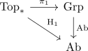

first homology functor as abelianization of the first homotopy functor
Proposition
Given category of path connected spaces category Top*, the following functors are canonically naturally isomorphic

where
- $\mathrm{Ab}$ is the abelianization functor
- $\mathrm{H}_1$ is the singular homology functor
- $\pi_1$ is the homotopy group functor
Proof
Note that
\begin{align*}
\pi_1(X,x) = \{\mathrm{homotopy rel}\partial \}
\end{align*}
Want
\begin{align*}
[y] \in \pi_1(X,x)
\end{align*}
represented by $\gamma: [0,1] \rightarrow X$
to it
\begin{align*}
[\Delta_{\mathrm{Top}}' \cong [0,1] \rightarrow X] = \sigma_{\gamma} \in C^{\mathrm{top}__1(X)
\end{align*}
welldefined element in the codomain
singular boundary map is zero, since $\gamma$ is a Loop
welldefined map (independent of representatives)
Observe:
- Suppose $\gamma, \gamma'$ are composible paths in $X$